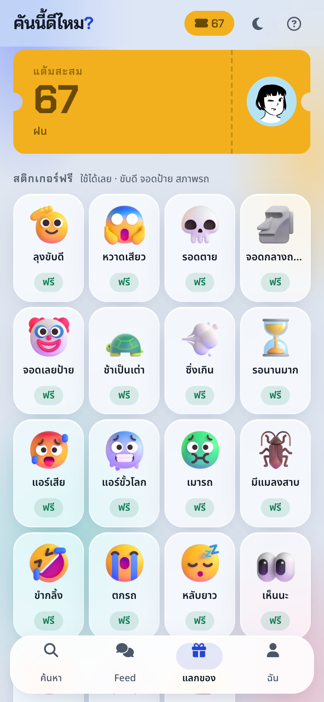
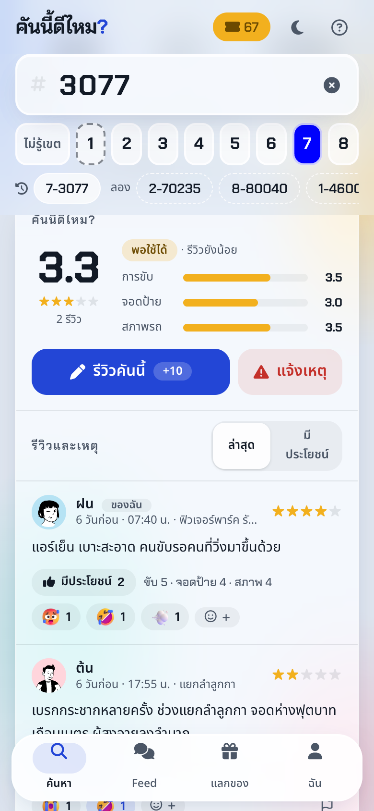
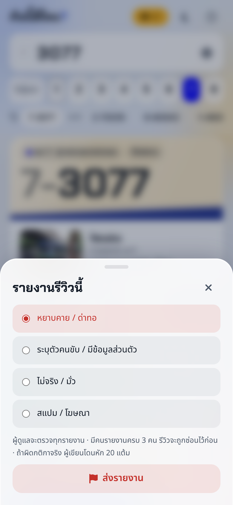
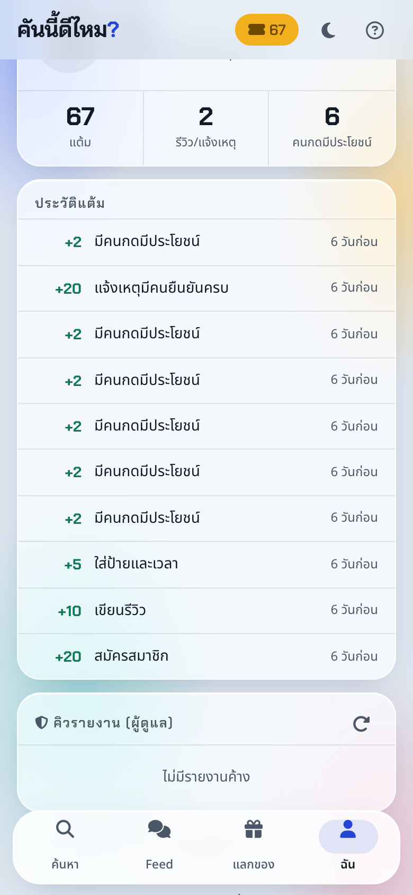

| งาน | สถานะ | หลักฐาน |
|---|---|---|
| ร้านแลกของ · redeem | ✓ เสร็จ | หักแต้มใน transaction · ล็อกแถวผู้ใช้กันกดพร้อมกัน |
| Sticker reaction | ✓ เสร็จ | ต้องแลกก่อนถึงกดได้ · ไม่ให้แต้ม (กันปั่น) |
| Report + moderator −20 | ✓ เสร็จ | ครบ 3 report ซ่อนก่อน · ผู้ดูแลตัดสิน · หักแต้มครั้งเดียว |
| Refresh token | ✓ เสร็จ | access 15 นาที · refresh ใน cookie HttpOnly หมุนทุกครั้ง |
| Word filter + กันเบอร์โทร | ✓ เสร็จ | จับ "เ หี้ ย", "sh1t" · ไม่จับ "โหดเหี้ยม", "กูเกิล" |
| PWA | ✓ เสร็จ | manifest + service worker · ติดตั้งลงมือถือได้ |
| Node 18 → 22 · backup รายวัน · nmap · HSTS ซ้ำ | ✓ เสร็จ | ดูสไลด์ Security |
| Google Sign-In จริง | ✓ เสร็จ | ตรวจ ID token กับ Google · แอป In production · เก็บบัญชีทดสอบไว้ใช้เดโม |
| แยก API + DB ไป node ที่ 2 | ◐ รอ node | deploy.sh รองรับแล้ว · ยังไม่ได้เพิ่ม node บน ruk-com |
| ให้เพื่อนลองใช้ · ปรับแต้ม | ◐ ทีมกรอก | ดูสไลด์ "ทดลองกับผู้ใช้" |
npm test — 13 ชุดทดสอบ ยิง API จริงกับ PostgreSQL · ผ่านทั้งหมดก่อน deploy




ลำดับเดโมสด: เข้าด้วยบัญชีทดสอบ → รีวิว 7-3077 (+15) → แลก 🦖 Yee (−20) → กดสติกเกอร์ในรีวิวคนอื่น → อีก 3 บัญชี report รีวิวหนึ่ง → บัญชีผู้ดูแลกด "ซ่อน" → ผู้เขียนเห็น −20 ในประวัติแต้ม · ข้อมูลในเดโมเป็นของทีม
| ถ้า… | ผล | ทำด้วย |
|---|---|---|
| กดแลก 3 ชิ้นพร้อมกัน แต้มพอชิ้นเดียว | 201 ×1 · 400 ×2 | SELECT … FROM users FOR UPDATE แล้วค่อยเช็กยอด |
| แลกของที่มีแล้ว | 409 | PK (user_id, reward_id) |
| กดสติกเกอร์ที่ยังไม่ได้แลก | 403 | join กับ user_rewards |
| report ซ้ำ / report รีวิวตัวเอง | 409 / 400 | UNIQUE (review_id, reporter_id) |
| ผู้ใช้ทั่วไปเรียก API ผู้ดูแล | 403 | อ่าน role จาก DB ทุกครั้ง (ถอดสิทธิ์มีผลทันที) |
สติกเกอร์ 20–50 · รูปโปรไฟล์ 60–100
รีวิว 2 ครั้งพร้อมป้าย/เวลา (+20 สมัคร) ≈ แลกสติกเกอร์ได้ 2 ชิ้น
ค่าแต้มยังเป็นค่าที่ทีมตั้งเอง — ปรับได้ที่ PTS ใน API และตาราง rewards โดยไม่ต้องแก้หน้าเว็บ
รีวิวที่ระบุตัวคนขับหรือด่าทอ ควรหายเร็ว ไม่ต้องรอผู้ดูแลออนไลน์ · แต่ 1 คนกดเล่น ๆ ซ่อนรีวิวคนอื่นไม่ได้
ตั้งจาก MODERATOR_EMAILS บน server ตอนเข้าสู่ระบบ · ตอนนี้เป็นบัญชีทีม · ไม่มีหน้า admin แยก ใช้แท็บ "ฉัน"
แจ้งผู้เขียนว่ารีวิวถูกซ่อน · อุทธรณ์ · บันทึก log ว่าผู้ดูแลคนไหนตัดสิน (มี resolved_by ใน DB แล้ว แต่ยังไม่มีหน้าดู)
แยก node ยังไม่ได้ลองจริง — ยังไม่รู้ว่า container ของ ruk-com ยอมให้ตั้ง iptables หรือไม่ ถ้าไม่ได้ ยังเหลือ bind + ALLOW_FROM
$ nmap -Pn -p 22,80,443,3000,3022,5432,8080 env-0241390… 22/tcp filtered ssh 80/tcp open http → 301 https 443/tcp open https 3000/tcp filtered ← API 3022/tcp open ← SSH gate ของ ruk-com (key) 5432/tcp filtered postgresql ← DB 8080/tcp open http-proxy → 301 https
$ bus-restore-test.sh backup : /var/backups/bus/bus-2026-10-08-1116.dump restore: 6 users, 7 reviews, 33 ledger rows live : 6 users, 7 reviews, 33 ledger rows
สแกนเฉพาะพอร์ตที่เกี่ยวกับระบบเรา เพราะ IP นี้เป็น LB ที่ใช้ร่วมกับลูกค้าอื่นของ ruk-com · 3022/8080 เป็นของ LB ไม่ใช่เครื่องเรา (เข้าใจว่าอย่างนั้น)
| มาตรการใหม่ | หลักฐาน |
|---|---|
| Google Sign-In | ตรวจ aud, iss, email_verified, exp · ขอแค่ email/profile · ชื่อที่แสดงใช้ชื่อต้นเท่านั้น · มี นโยบายความเป็นส่วนตัว |
| Refresh token | cookie HttpOnly; Secure; SameSite=Strict; Path=/api/auth · DB เก็บแค่ sha256 · access JWT 15 นาที |
| token ถูกขโมย | ใช้ token เก่าซ้ำ → 401 + เพิกถอนทั้งชุด · logout แล้ว refresh → 401 |
| Node 22 LTS | โหลดจาก nodejs.org ตรวจ SHA256 ก่อนติดตั้ง · v22.23.3 |
| Backup | systemd timer 03:00 เวลาไทย · ไฟล์ 600 root · ทดสอบ restore แล้ว (ซ้าย) |
| Header | HSTS เหลือ 1 ตัว (จาก LB) · เพิ่ม Permissions-Policy · CSP เปิดเฉพาะ Google Sign-In |
| PDPA | ลบบัญชีเองได้ · ลบรีวิว/แต้ม/ของที่แลกตาม · ห้ามเบอร์โทรในรีวิว |
| ยังเหมือนเดิม | ss -ltn: 0.0.0.0:80 · 127.0.0.1:3000 · 127.0.0.1:5432 |
| Method | Endpoint (ใหม่ใน Sprint 2) | ทำอะไร |
|---|---|---|
| GET | /api/config | บอกหน้าเว็บว่าเปิด Google จริงหรือยัง |
| POST | /api/auth/refresh · /logout | หมุน refresh token · เพิกถอน |
| GET | /api/rewards | ของในร้าน + มีแล้วหรือยัง |
| POST | /api/rewards/{id}/redeem | แลก (ล็อกแถว · หักแต้ม) |
| POST | /api/me/avatar | ใช้รูปโปรไฟล์ที่แลกมา |
| DEL | /api/me | ลบบัญชี |
| POST | /api/reviews/{id}/react | ใส่/ถอนสติกเกอร์ |
| POST | /api/reviews/{id}/report | รายงาน · ครบ 3 ซ่อน |
| GET | /api/mod/reports | คิวผู้ดูแล |
| POST | /api/mod/reviews/{id}/resolve | hide (−20) / keep |
ตารางใหม่: rewards · user_rewards · review_reactions · reports · refresh_tokens
$ cd api && npm test ✔ config: ยังไม่มี Google client ID → โหมดจำลอง ✔ เข้าสู่ระบบ: +20 · cookie HttpOnly · อีเมลจริงถูกปฏิเสธ ✔ รีวิว: +10 +5 · ซ้ำ 409 · คำหยาบ/เบอร์โทร 400 ✔ word filter: จับคำเลี่ยง ไม่จับคำปกติ ✔ มีประโยชน์: +2 · ซ้ำ 409 · ของตัวเอง 400 ✔ แลกของ: ไม่พอ 400 · ได้ · ซ้ำ 409 · ledger ✔ แลกของ: กดพร้อมกัน → ได้ชิ้นเดียว ✔ รูปโปรไฟล์: ต้องแลกก่อน ✔ สติกเกอร์: ต้องแลกก่อน · กดซ้ำ = ถอน ✔ report: ตัวเอง 400 · ซ้ำ 409 · ครบ 3 ซ่อน ✔ moderator: 403 · hide −20 ครั้งเดียว · keep ✔ refresh: หมุน · ใช้ซ้ำ = เพิกถอน · logout ✔ ลบบัญชี: ข้อมูลหาย · token ใช้ไม่ได้ ℹ tests 13 · pass 13 · fail 0
บั๊กที่เจอระหว่างทดสอบ: test เจอ "เหี้ยมาก" หลุด filter (มีคำว่า "เหี้ยม" ซ้อนอยู่) · ลองบน server เจอ logout แล้วยัง refresh ได้ ภายใน 20 วินาที (ช่วงผ่อนผันสำหรับหลายแท็บ) → แก้แล้วเพิ่ม test ทั้งคู่
| คนที่ลอง | __ คน · สาย __ |
| รีวิว / แจ้งเหตุ | __ / __ |
| ใส่ป้าย + เวลา | __ % ของรีวิว |
| แลกของอย่างน้อย 1 ชิ้น | __ คน |
| ติดตั้งเป็นแอป (PWA) | __ คน |
| report ที่ผู้ดูแลยืนยันว่าผิด | __ |
ดึงตัวเลขได้จาก DB: SELECT reason, count(*) FROM points_ledger GROUP BY 1
ค่าตอนนี้: รีวิว +10 · ป้าย/เวลา +5 · มีประโยชน์ +2 (เพดาน 30/วัน) · สติกเกอร์ 20–50
pull-backup.shMOCK_LOGIN=0)